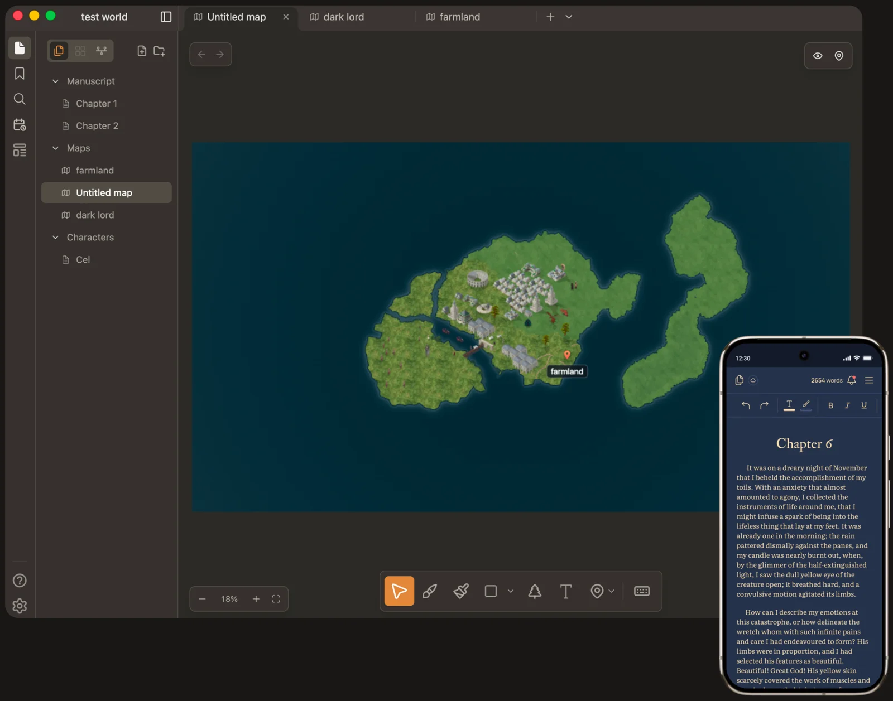
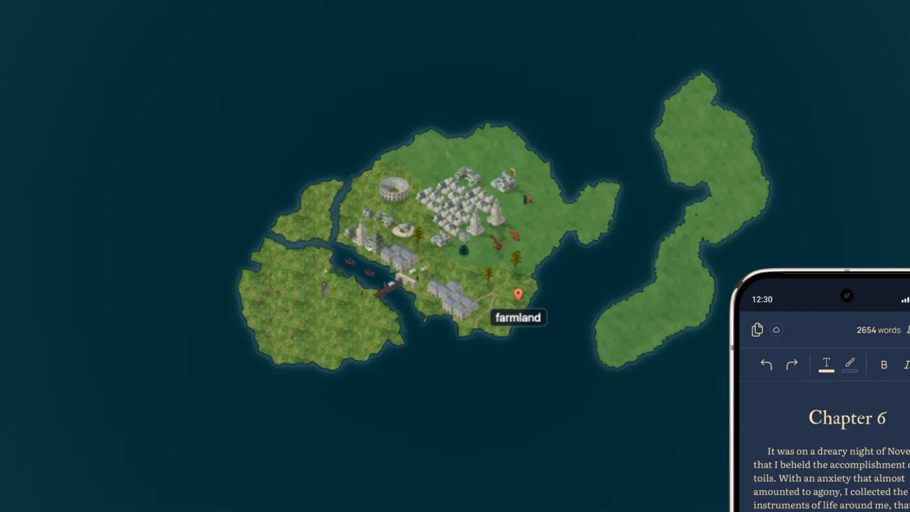

Ages, worked out for you
Set a birthday once. Every event shows how old each character is at that moment.
Siege of Harrow · 12 Frost, 312 AE
Cel23
Maren41
Orrin16
Lune is a writing app with a map editor and a story timeline built in.

Most writers keep the draft in one app, the map in another and the timeline in a spreadsheet. Lune keeps them together and keeps them talking.
Chapters, scenes and notes, linked to each other with [[wiki links]].
Paint terrain, place towns and forests, and pin each place to its note.
Dates and time jumps in your prose become events on one shared timeline.
01 · Writing
Write chapters in a calm, typeset editor. Wrap any name in [[double brackets]] and Lune turns it into a page in your world. Hover the name later to see who they are without leaving the sentence.

02 · Map editor
The map editor works like a painting app: brush in land and sea, stamp forests and buildings from the asset library, and drop a pin on any place. Each pin opens the note behind it, so your map is part of your wiki, not a picture beside it.
03 · Timeline
Drop a time jump into a scene, like “three winters later”, and Lune moves the story clock forward. Every dated scene, era and event lands on one timeline, in your own calendar, reaching back before year zero if your history does.
Built with working authors who keep hundreds of characters straight across many books.
Set a birthday once. Every event shows how old each character is at that moment.
Give notes properties like house, birthplace or status, then build live tables filtered by any of them.
Name your own months, set your own epoch, and write dates before year zero.
Hide the sidebar, the maps and the timeline. Just you and the page.
Export the manuscript as [DOCX, PDF or EPUB] for your editor, your agent or your readers.
Lune has no generative AI. It won't write your chapters or invent your continents. It keeps track of what you make, so you can keep making it.
Made by hand
Not generated, not traced, not “touched up”. Meet the cast, watch them get painted from the first pencil line, and browse every building, tree and mountain in Lune.

Map Assets
Packs of buildings, trees and terrain to stamp straight onto your maps. [N] packs and counting.
Bring your own
Drag any PNG onto the map and Lune drops it in at your map’s scale with its transparency intact. Art you commissioned for your own book belongs on your own map.
[Free to try. Lune Pro is [PRICE] a [month/year] for unlimited maps and projects.]